Director review · আপনার চাকরি কি আসলেই সেফ? · প্রথম ১ মিনিটDirector review · আপনার চাকরি কি আসলেই সেফ? · প্রথম ১ মিনিট
Inspect story meaning, reference style, hand/prop contact, continuity, text, density and transition. Edit the manifest/renderer and regenerate until every approved record matches the pictures.
001 · 0.08–3.92
(টাইটেল কার্ড): আপনার চাকরি কি আসলেই সেফ?
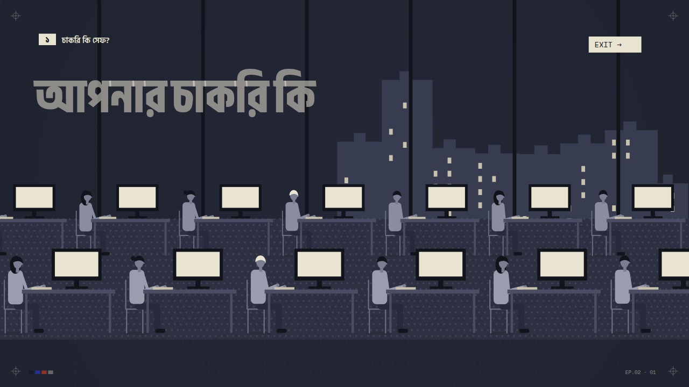
START · 0.08s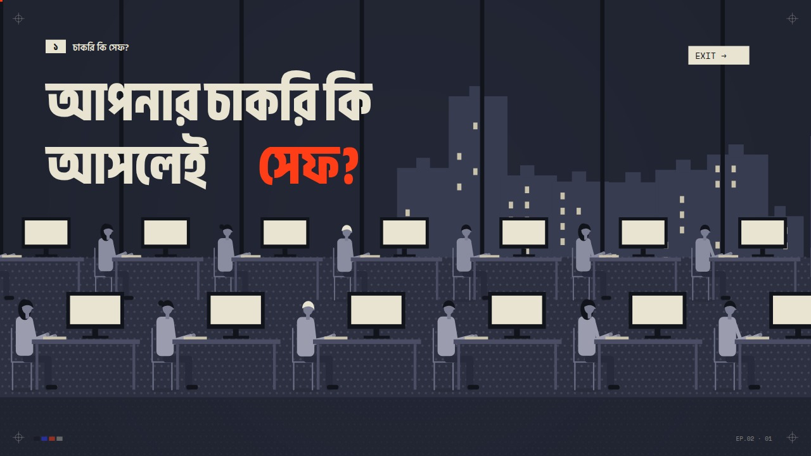
ACTION PEAK · 2.00s END · 3.92s
END · 3.92sIntent: Open inside a dense working night office; the headline asks whether the viewer’s job is safe while the workplace remains active behind it.
Decision: The threatened subject is visible before the argument begins.
Reference use: Borrow staging, silhouette density, material and motion mechanism from ref_001_night_office_title.jpg.
Recorded issues/fixes: Checked hand contact, text collisions, floor contact and unsupported factual additions. → Aligned held props to wrists, corrected baselines and separated text bands where required.
002 · 4.08–9.92
২৬ অক্টোবর। মাইক্রোসফট তাদের প্রায় ৬০ হাজার কর্মীকে একটা অফার দিছে।
 START · 4.08s
START · 4.08s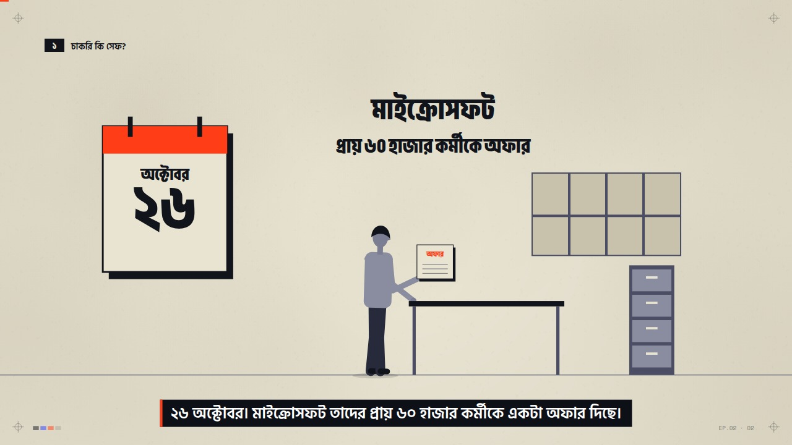
ACTION PEAK · 7.00s END · 9.92s
END · 9.92sIntent: ২৬ অক্টোবর। মাইক্রোসফট তাদের প্রায় ৬০ হাজার কর্মীকে একটা অফার দিছে। | A dated offer arrives on the personnel desk; the worker reaches toward the letter.
Decision: Date, company and offer are read in one glance.
Reference use: Borrow staging, silhouette density, material and motion mechanism from ref_002_night_office_offer.jpg.
Recorded issues/fixes: Checked hand contact, text collisions, floor contact and unsupported factual additions. → Aligned held props to wrists, corrected baselines and separated text bands where required.
003 · 10.08–12.92
অফারটা সিম্পল: টাকা নেন, চাকরি ছাড়েন।
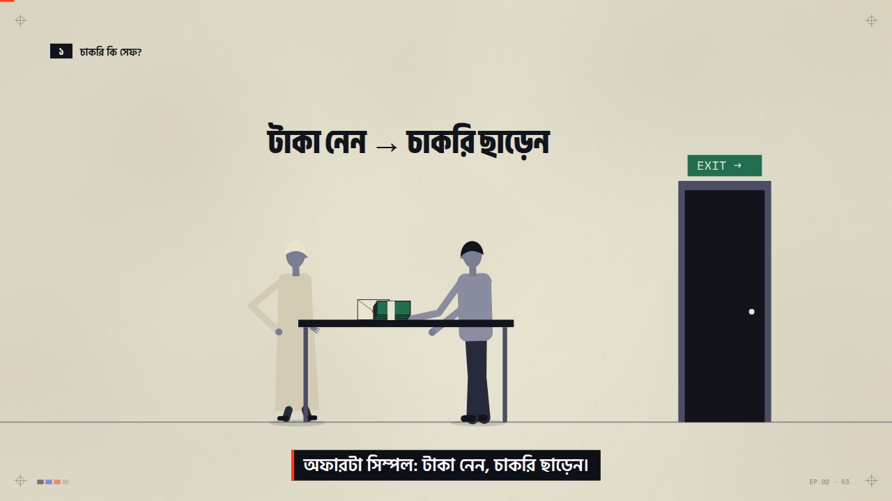
START · 10.08sACTION PEAK · 11.50s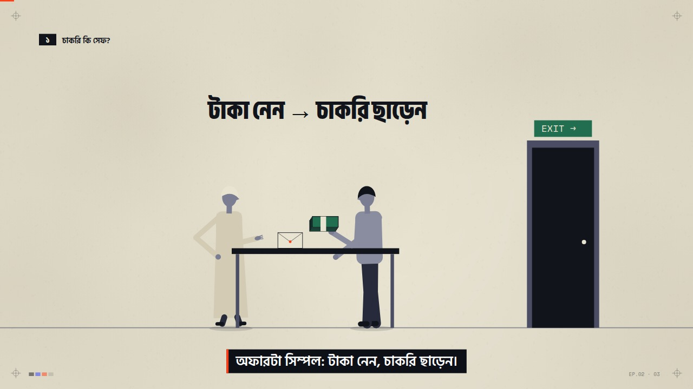
END · 12.92sIntent: অফারটা সিম্পল: টাকা নেন, চাকরি ছাড়েন। | Show an exit payment moving across the desk between employer and worker, with an exit door beyond.
Decision: The line becomes an unmistakable transaction and consequence.
Reference use: Borrow staging, silhouette density, material and motion mechanism from ref_002_night_office_offer.jpg.
Recorded issues/fixes: Checked hand contact, text collisions, floor contact and unsupported factual additions. → Aligned held props to wrists, corrected baselines and separated text bands where required.
004 · 13.08–16.92
৬০ হাজার মানে পুরা কোম্পানির প্রায় চার ভাগের এক ভাগ।
 START · 13.08s
START · 13.08s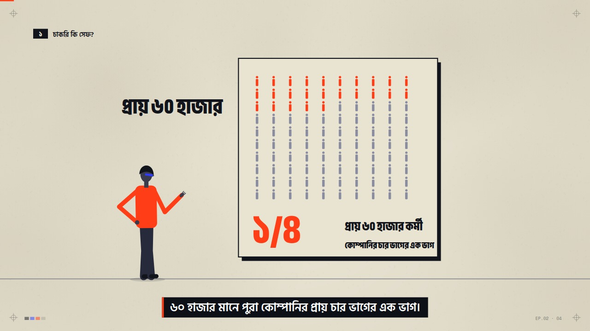
ACTION PEAK · 15.00s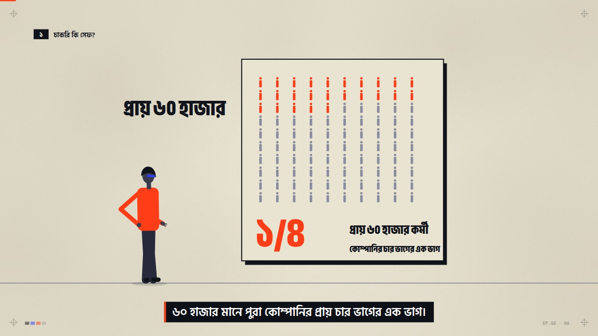
END · 16.92sIntent: ৬০ হাজার মানে পুরা কোম্পানির প্রায় চার ভাগের এক ভাগ। | A literal 100-person diagram highlights 25 positions; guide points to the quarter, without recycling the office.
Decision: Literal geometry protects the numerical relationship.
Reference use: Borrow staging, silhouette density, material and motion mechanism from ref_003_office_headcount_card.jpg.
Recorded issues/fixes: Checked hand contact, text collisions, floor contact and unsupported factual additions. → Aligned held props to wrists, corrected baselines and separated text bands where required.
005 · 17.08–19.92
আর এইটা একা মাইক্রোসফটের গল্প না।
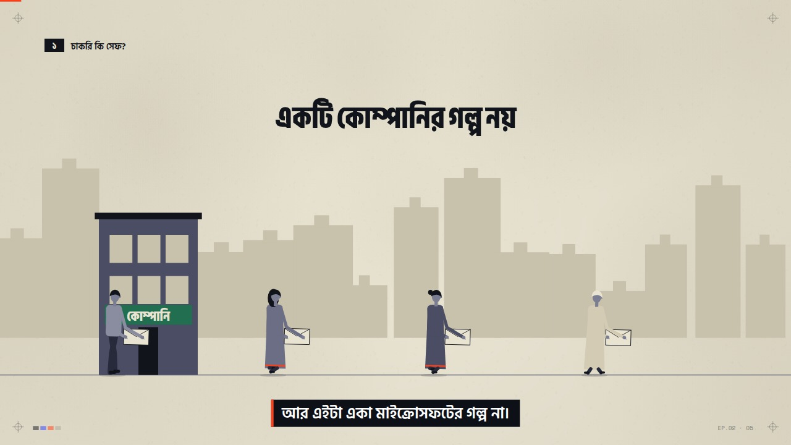
START · 17.08s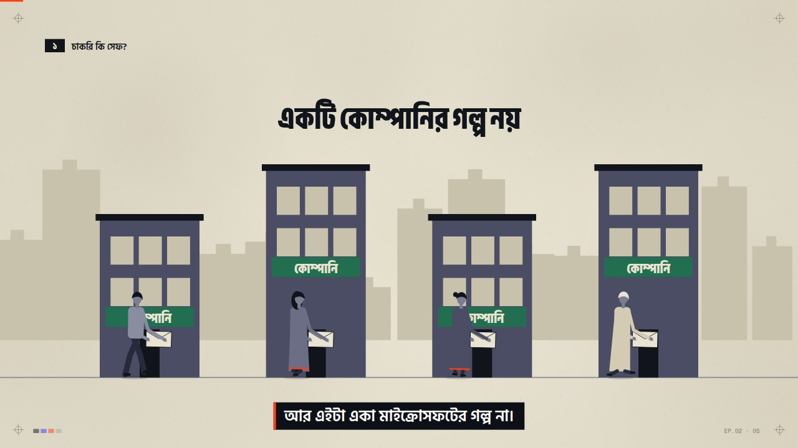
ACTION PEAK · 18.50s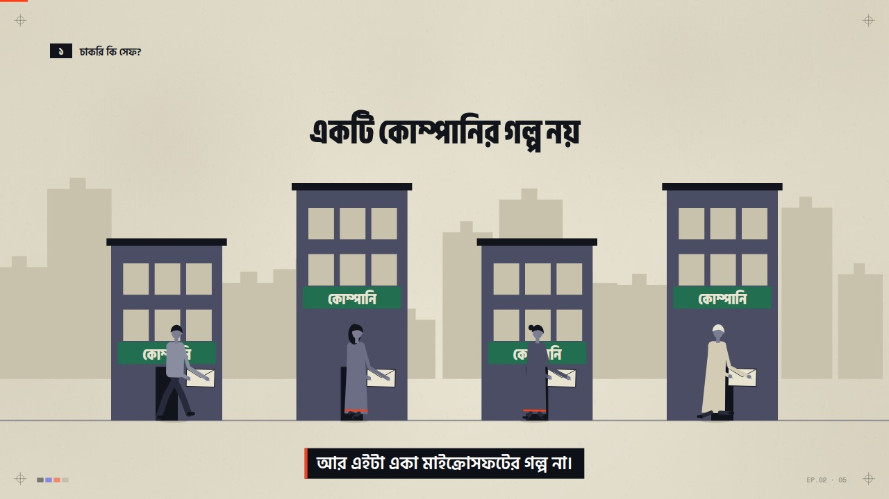
END · 19.92sIntent: আর এইটা একা মাইক্রোসফটের গল্প না। | Four different company frontages and departing workers expand the story beyond Microsoft.
Decision: Breadth is shown by multiple employers rather than repeated text.
Reference use: Borrow staging, silhouette density, material and motion mechanism from f_0154.jpg.
Recorded issues/fixes: Checked hand contact, text collisions, floor contact and unsupported factual additions. → Aligned held props to wrists, corrected baselines and separated text bands where required.
006 · 20.08–27.92
এই বছরের প্রথম নয় মাসে আমেরিকার কোম্পানিগুলা প্রায় ১ লাখ ২০ হাজার ছাঁটাইয়ের কারণ হিসেবে সরাসরি এআই এর নাম নিছে।
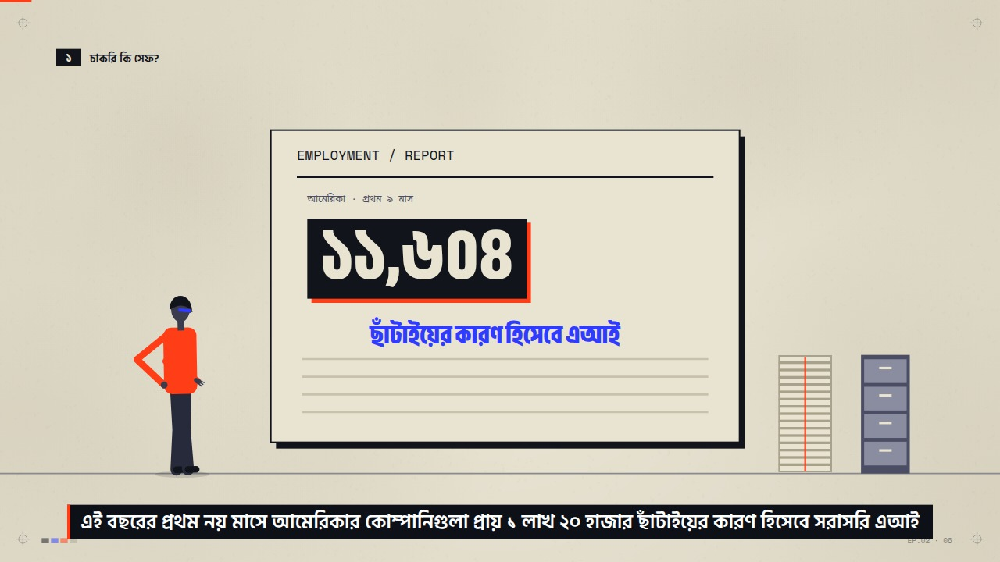
START · 20.08s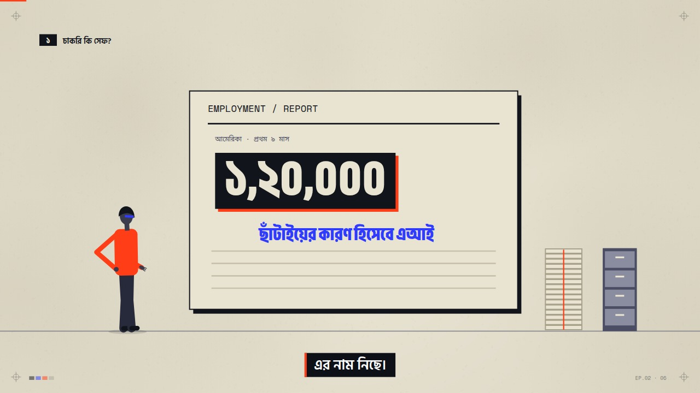
ACTION PEAK · 24.00sEND · 27.92sIntent: এই বছরের প্রথম নয় মাসে আমেরিকার কোম্পানিগুলা প্রায় ১ লাখ ২০ হাজার ছাঁটাইয়ের কারণ হিসেবে সরাসরি এআই এর নাম নিছে। | A report fills with the narrated US total and named AI cause; a rising counter is evidence, not a repeated street walk.
Decision: The report format distinguishes evidence from a decorative statistic.
Reference use: Borrow staging, silhouette density, material and motion mechanism from ref_004_layoff_walkers_counter.jpg.
Recorded issues/fixes: Checked hand contact, text collisions, floor contact and unsupported factual additions. → Aligned held props to wrists, corrected baselines and separated text bands where required.
007 · 28.08–31.92
পুরা ২০২৫ সালে এই সংখ্যা ছিল ৫৫ হাজারের মতো।
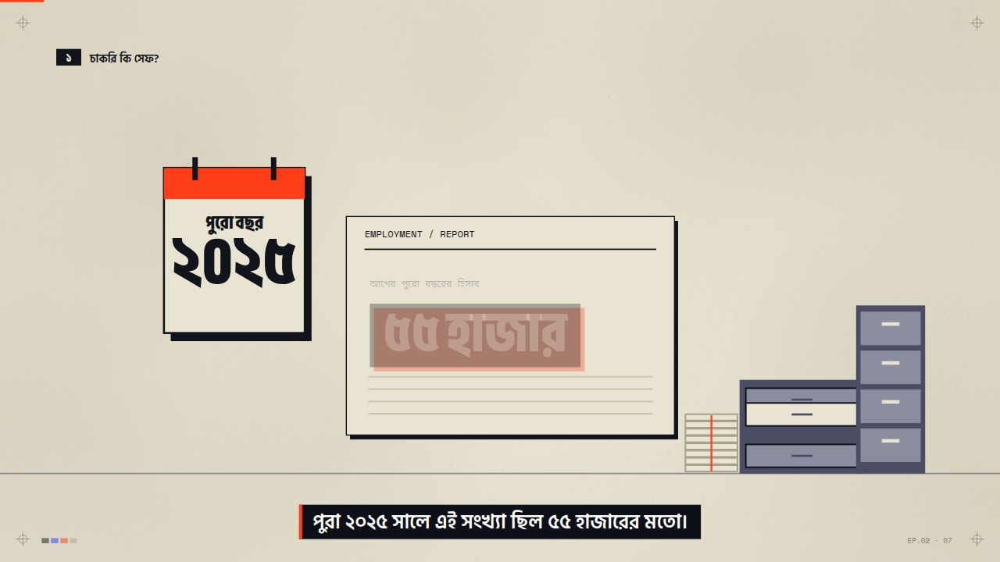
START · 28.08s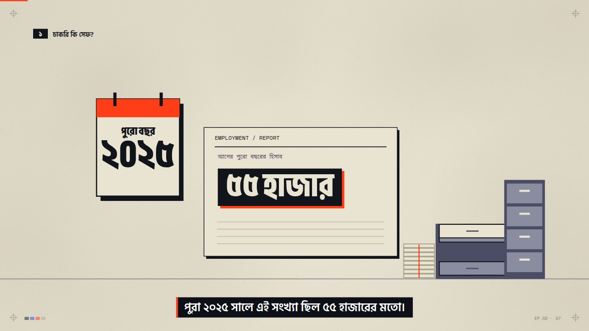
ACTION PEAK · 30.00sEND · 31.92sIntent: পুরা ২০২৫ সালে এই সংখ্যা ছিল ৫৫ হাজারের মতো। | Open the previous-year archive and isolate its 55-thousand total before comparing years.
Decision: The past total is established before using it in a ratio.
Reference use: Borrow staging, silhouette density, material and motion mechanism from f_0199.jpg.
Recorded issues/fixes: Checked hand contact, text collisions, floor contact and unsupported factual additions. → Aligned held props to wrists, corrected baselines and separated text bands where required.
008 · 32.08–35.92
মানে নয় মাসেই আগের পুরা বছরের দুই গুণের বেশি।
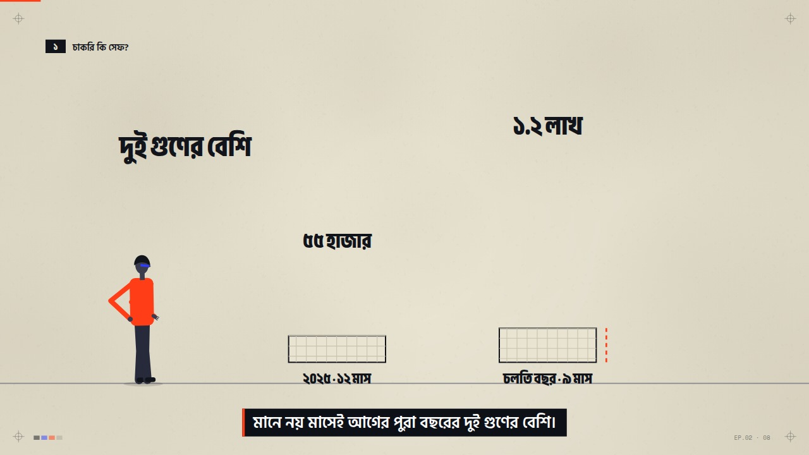
START · 32.08s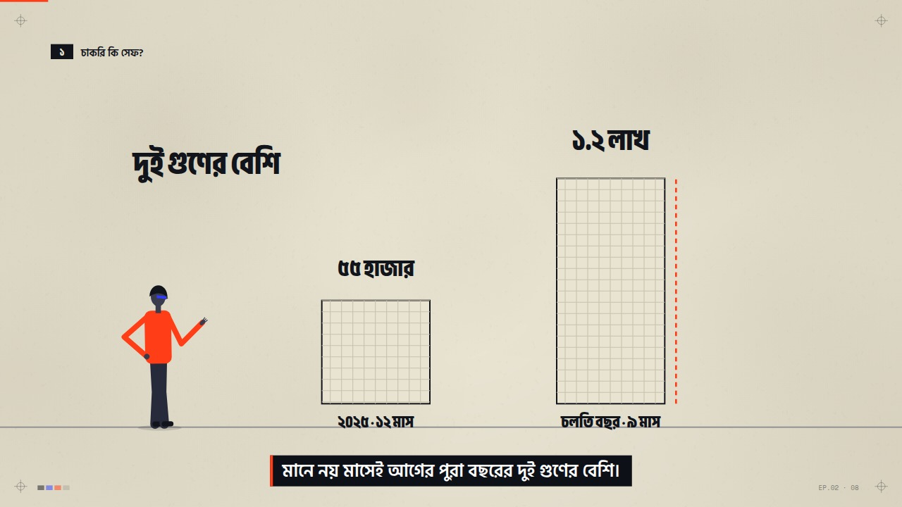
ACTION PEAK · 34.00s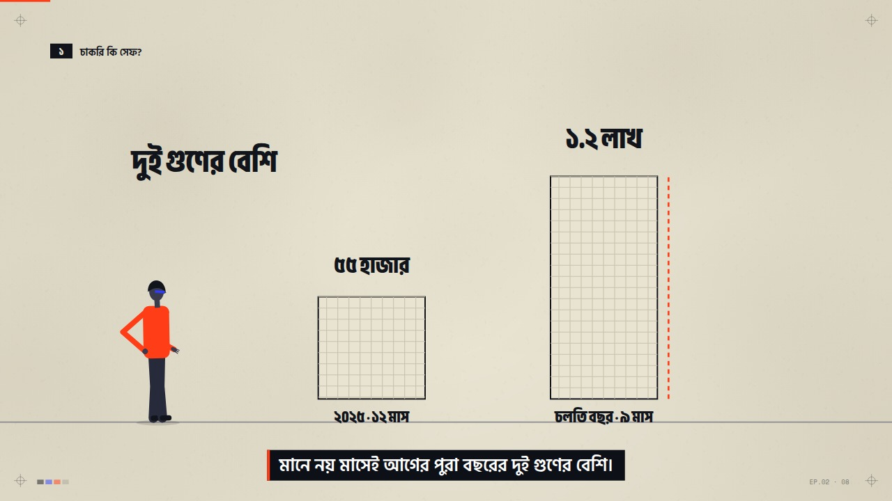
END · 35.92sIntent: মানে নয় মাসেই আগের পুরা বছরের দুই গুণের বেশি। | Two towers share a baseline and an exact 120000:55000 height ratio, revealing more than double in less time.
Decision: Common baseline makes the relationship visible without invented data.
Reference use: Borrow staging, silhouette density, material and motion mechanism from f_0199.jpg.
Recorded issues/fixes: Checked hand contact, text collisions, floor contact and unsupported factual additions. → Aligned held props to wrists, corrected baselines and separated text bands where required.
009 · 36.08–38.92
তাও আমরা কী বলি? "আমার কাজ এআই পারবে না।"
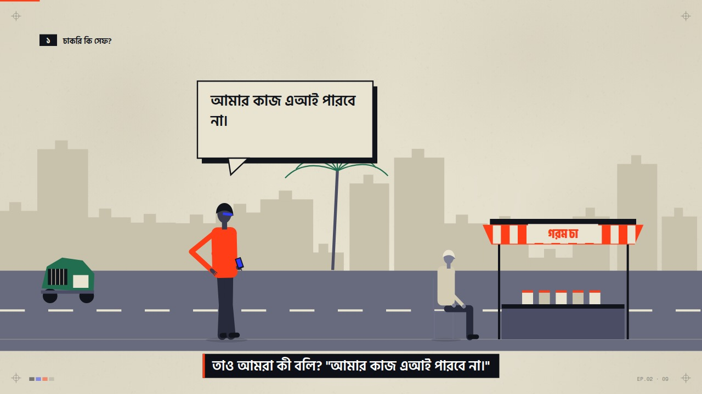
START · 36.08s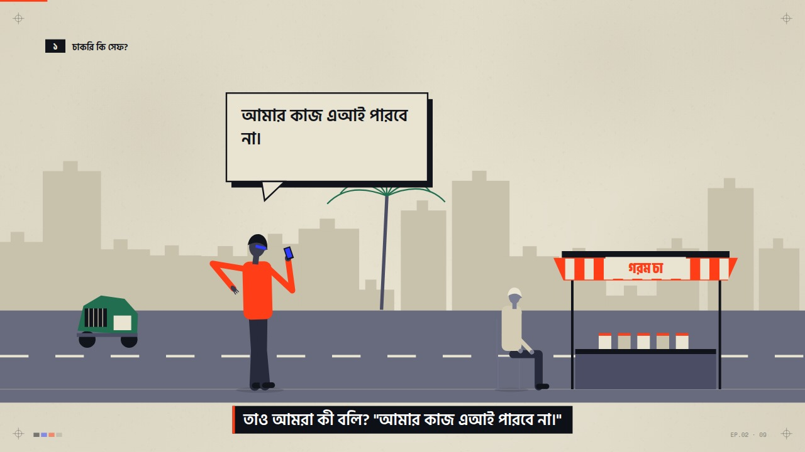
ACTION PEAK · 37.50s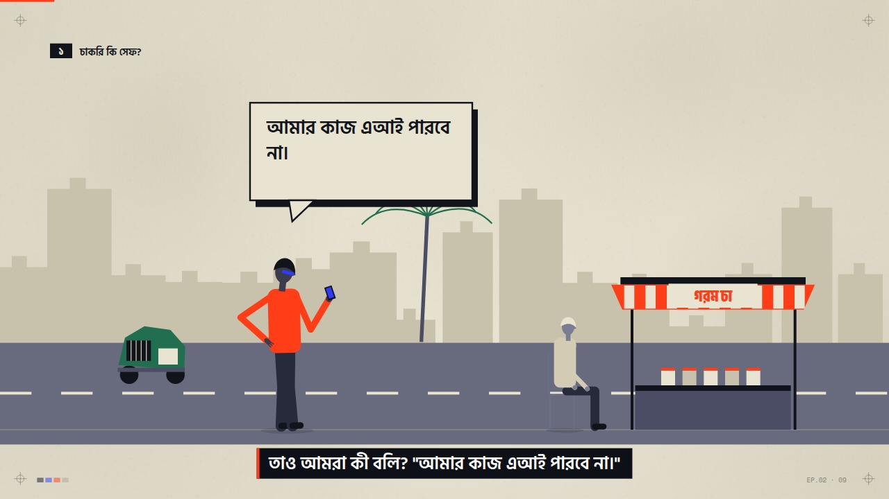
END · 38.92sIntent: তাও আমরা কী বলি? "আমার কাজ এআই পারবে না।" | Guide raises a phone while making the quoted claim at the established street tea stall.
Decision: A recurring human place grounds the belief as something people say.
Reference use: Borrow staging, silhouette density, material and motion mechanism from f_0009.jpg.
Recorded issues/fixes: Checked hand contact, text collisions, floor contact and unsupported factual additions. → Aligned held props to wrists, corrected baselines and separated text bands where required.
010 · 39.08–40.92
আসলেই? চলেন, একটু দেখি।
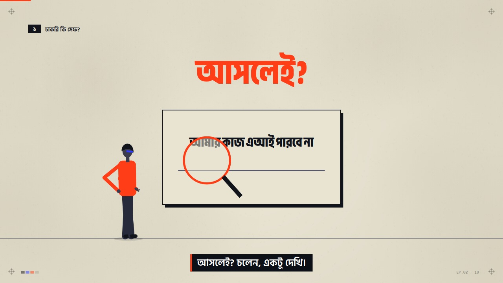
START · 39.08s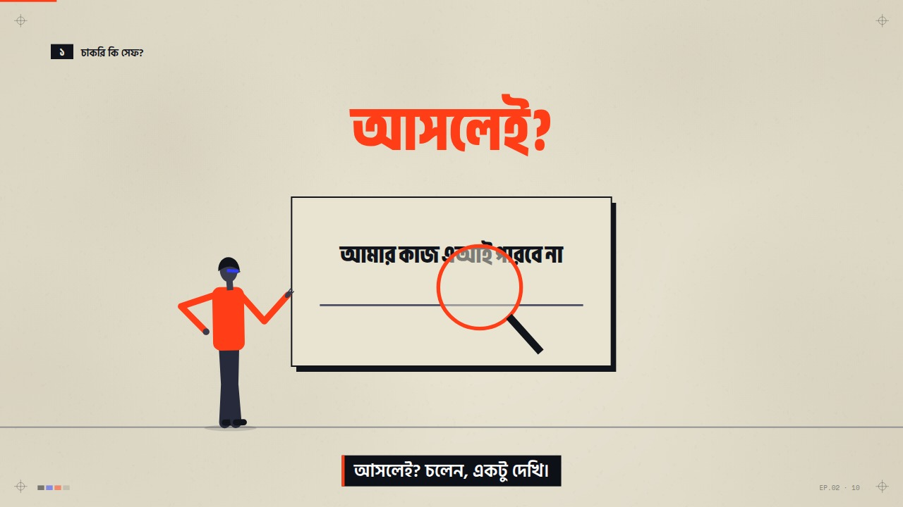
ACTION PEAK · 40.00s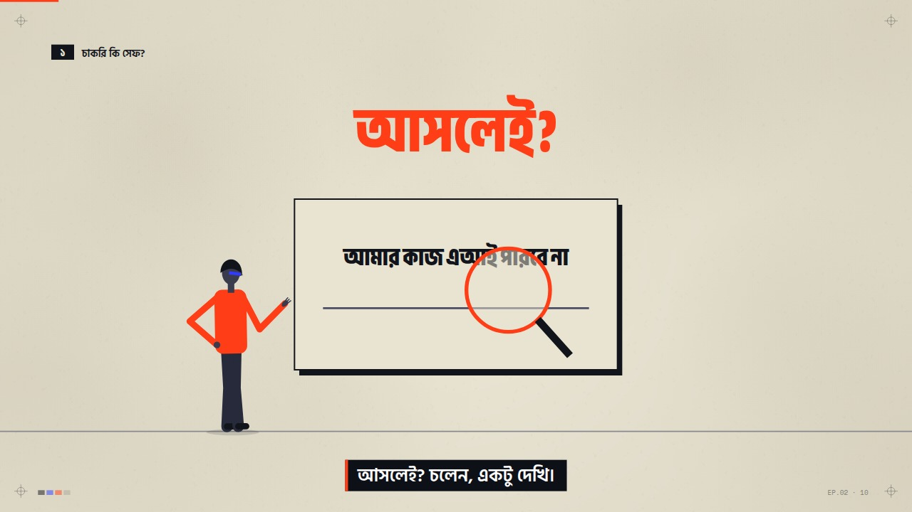
END · 40.92sIntent: আসলেই? চলেন, একটু দেখি। | Cut to a close evidence inspection: a magnifier travels over the claim, opening the question rather than replaying the street.
Decision: Inspection turns the rhetorical question into a visual action.
Reference use: Borrow staging, silhouette density, material and motion mechanism from f_0300.jpg.
Recorded issues/fixes: Checked hand contact, text collisions, floor contact and unsupported factual additions. → Aligned held props to wrists, corrected baselines and separated text bands where required.
011 · 41.08–45.92
আশেপাশে একটু শোনেন। সবার একটা না একটা অজুহাত আছে।
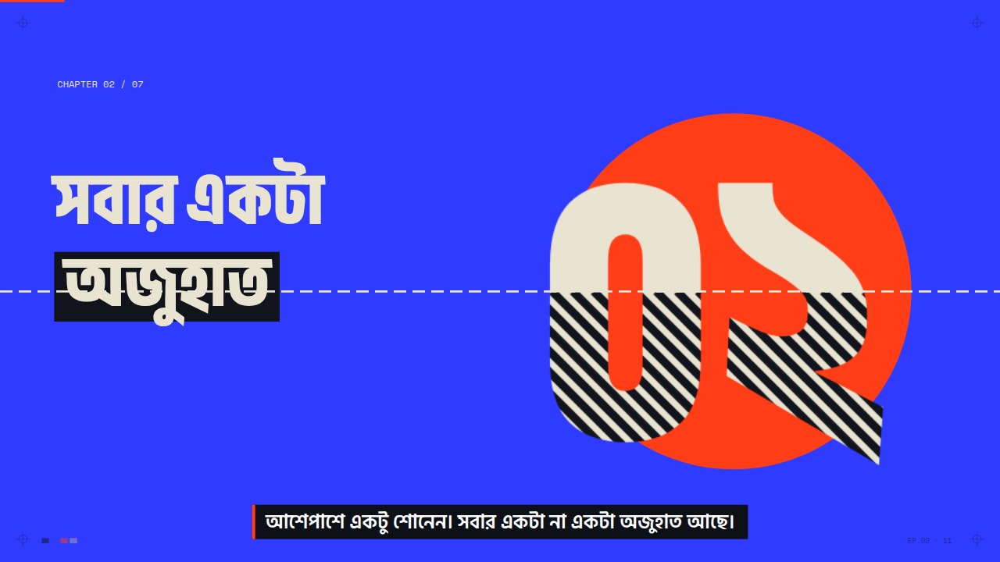
START · 41.08s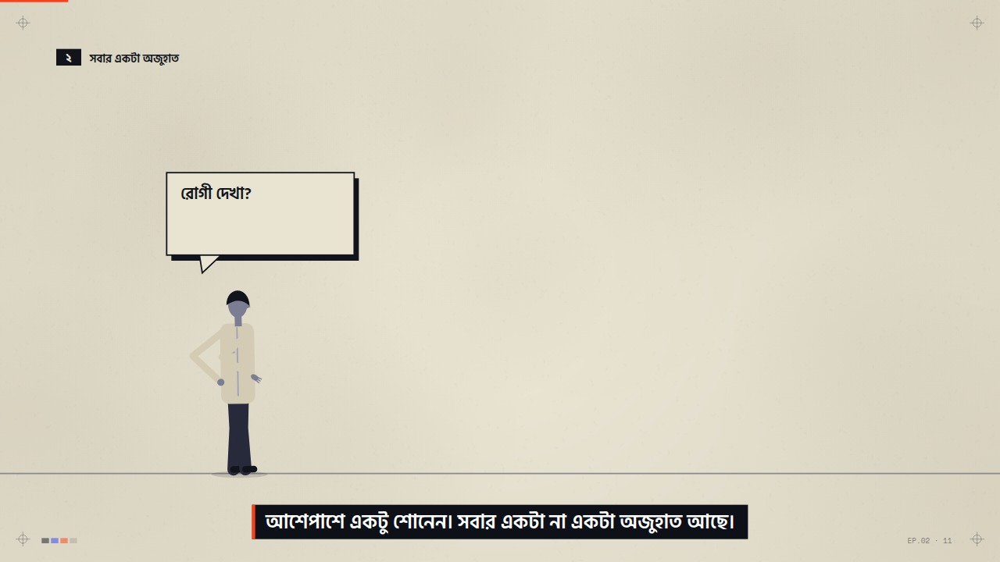
ACTION PEAK · 43.50s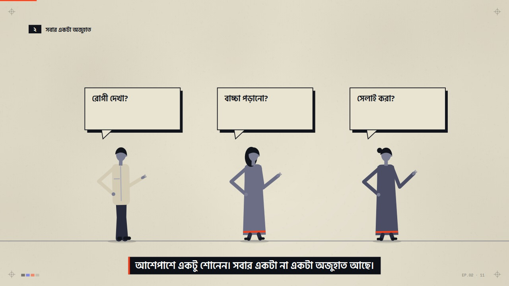
END · 45.92sIntent: আশেপাশে একটু শোনেন। সবার একটা না একটা অজুহাত আছে। | Three distinct professionals voice their own claims; this is a conversation, not three room templates. First 2.4 seconds preserve the blue chapter card and striped 02 from the reference, followed by the three professional claims.
Decision: The chapter card preserves series identity before expanding the excuses.
Reference use: Borrow staging, silhouette density, material and motion mechanism from f_0067.jpg. | Borrow staging, silhouette density, material and motion mechanism from ref_007_chapter_two_card.jpg.
Recorded issues/fixes: Checked hand contact, text collisions, floor contact and unsupported factual additions. → Aligned held props to wrists, corrected baselines and separated text bands where required.
012 · 46.08–48.92
ডাক্তার বলে, রোগী দেখা এআই পারবে না।
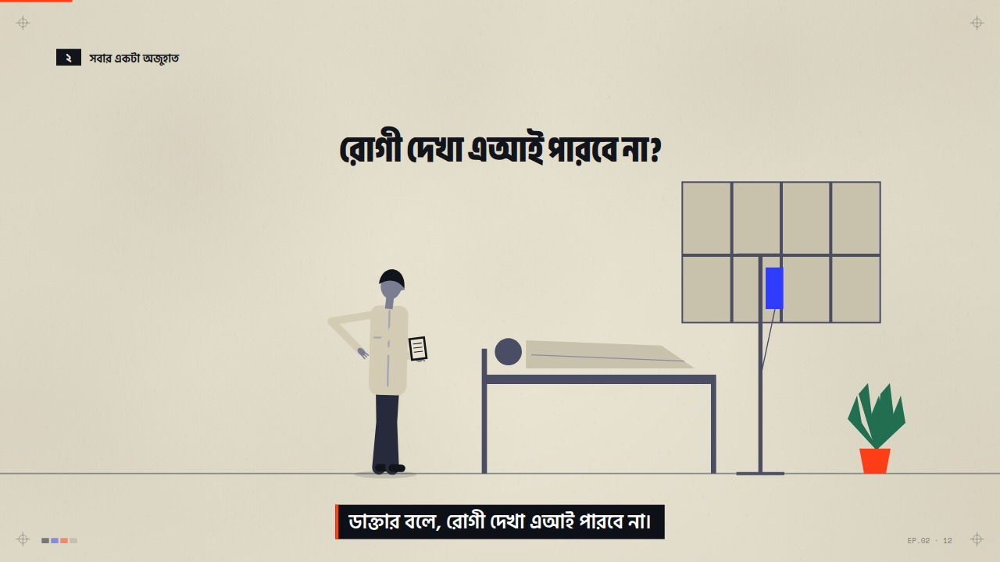
START · 46.08sACTION PEAK · 47.50sEND · 48.92sIntent: ডাক্তার বলে, রোগী দেখা এআই পারবে না। | In a dedicated ward, doctor raises a report beside a lying patient, articulating both arms.
Decision: The claim is embodied by real patient work rather than a generic doctor icon.
Reference use: Borrow staging, silhouette density, material and motion mechanism from f_0159.jpg.
Recorded issues/fixes: Checked hand contact, text collisions, floor contact and unsupported factual additions. → Aligned held props to wrists, corrected baselines and separated text bands where required.
013 · 49.08–51.92
টিচার বলে, টিচার ছাড়া বাচ্চা পড়বে কেমনে?
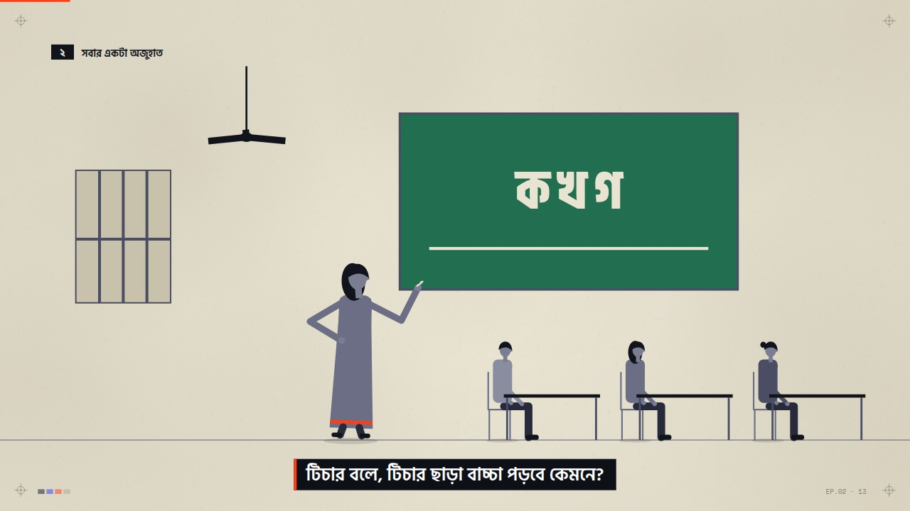
START · 49.08sACTION PEAK · 50.50sEND · 51.92sIntent: টিচার বলে, টিচার ছাড়া বাচ্চা পড়বে কেমনে? | A teacher writes directly on a full classroom board; three seated students face their desks.
Decision: Teacher identity comes from teaching action and a populated room.
Reference use: Borrow staging, silhouette density, material and motion mechanism from ref_008_profession_rooms.jpg.
Recorded issues/fixes: Checked hand contact, text collisions, floor contact and unsupported factual additions. → Aligned held props to wrists, corrected baselines and separated text bands where required.
014 · 52.08–54.92
গার্মেন্টসের লোক বলে, রোবট আবার সেলাই করবে নাকি?
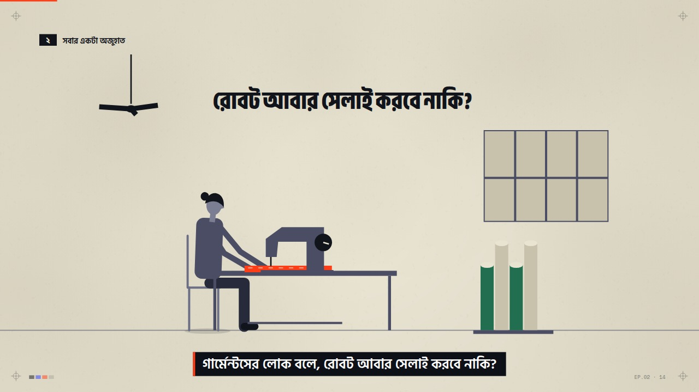
START · 52.08sACTION PEAK · 53.50sEND · 54.92sIntent: গার্মেন্টসের লোক বলে, রোবট আবার সেলাই করবে নাকি? | Close sewing-floor view: both hands feed cloth across the tabletop and the needle repeatedly penetrates it.
Decision: Physical contact makes the profession credible and animated.
Reference use: Borrow staging, silhouette density, material and motion mechanism from ref_008_profession_rooms.jpg.
Recorded issues/fixes: Checked hand contact, text collisions, floor contact and unsupported factual additions. → Aligned held props to wrists, corrected baselines and separated text bands where required.
015 · 55.08–59.92
কিন্তু মজার ব্যাপার হলো, যারা এআই সবচেয়ে কাছ থেকে দেখে, তারা কিন্তু এত রিল্যাক্সড না।
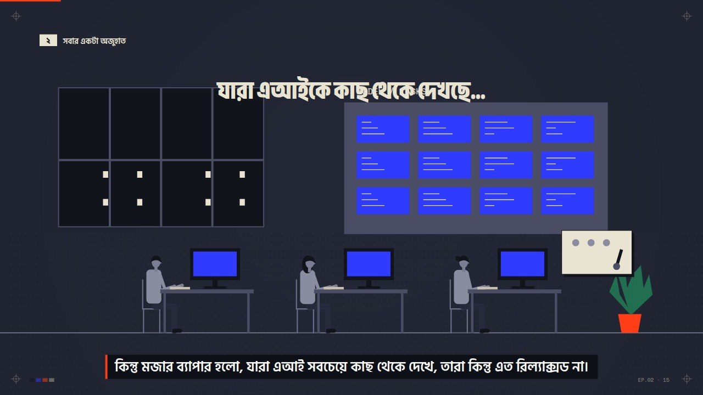
START · 55.08sACTION PEAK · 57.50sEND · 59.92sIntent: কিন্তু মজার ব্যাপার হলো, যারা এআই সবচেয়ে কাছ থেকে দেখে, তারা কিন্তু এত রিল্যাক্সড না। | Cut into a separate AI lab: three researchers type asynchronously beneath task displays, contrasting their proximity with casual confidence.
Decision: Proximity is expressed through active daily work with the system.
Reference use: Borrow staging, silhouette density, material and motion mechanism from ref_009_ai_lab_survey.jpg.
Recorded issues/fixes: Checked hand contact, text collisions, floor contact and unsupported factual additions. → Aligned held props to wrists, corrected baselines and separated text bands where required.